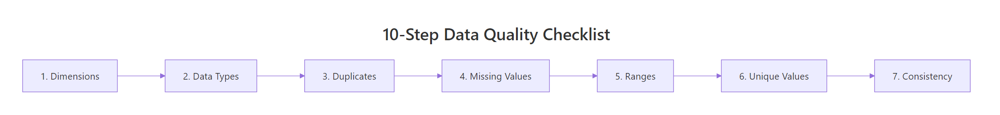
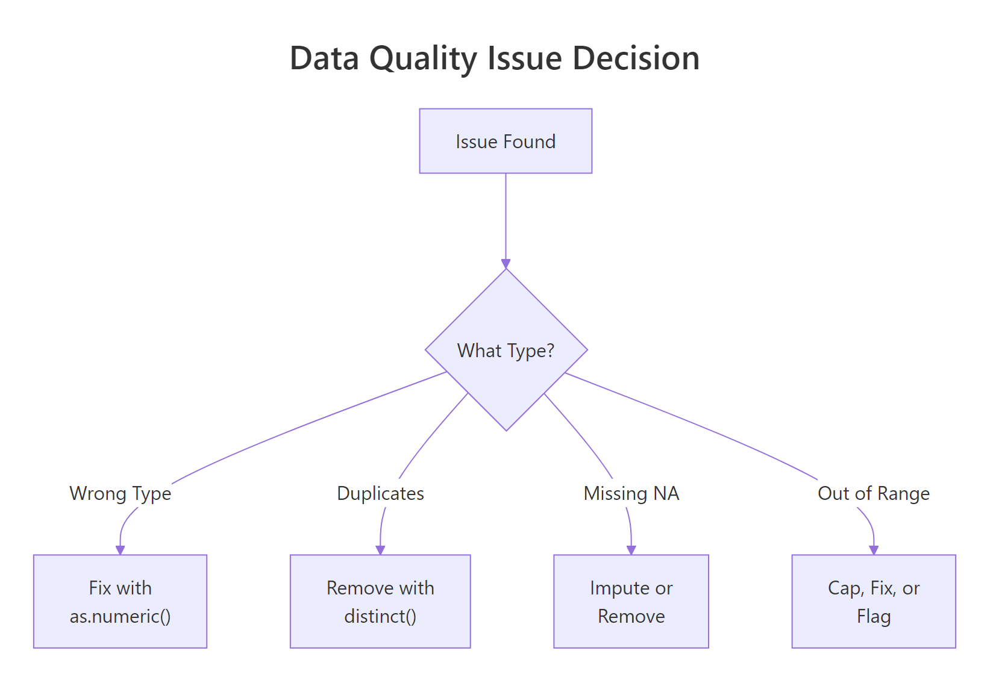
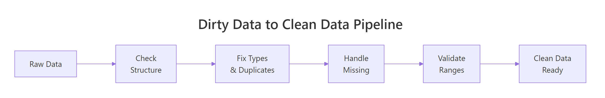

Data Quality Checking in R: 10 Things to Verify Before You Analyze
Data quality checking is the process of verifying your dataset's structure, types, values, and relationships before analysis, catching problems that would silently corrupt every downstream result.
Every data analysis rests on one assumption: the data is trustworthy. Skip the quality check and you discover the broken column at 2 AM, after two days of modeling. A single mistyped column, a batch of duplicate rows, or a few impossible values can turn your regression coefficients into fiction.
Introduction
Real datasets arrive messy. CSV exports have columns that look numeric but contain hidden text. Database dumps carry duplicate rows from a bad join. Survey data has ages of -1 and dates from the year 1900. These problems do not announce themselves. They sit quietly inside your data frame until they ruin a result you trusted.
This tutorial gives you a reusable 10-step checklist for data quality checking in R. Each check comes with runnable code you can paste into any project. We use base R and dplyr, both of which run directly in your browser here. Click Run on the first block, then work top to bottom.

Figure 1: The 10-step data quality checklist flows left to right, from structure checks through content validation.
The ten checks fall into three groups. First, you verify structure: dimensions, column names, and data types. Second, you verify content: duplicates, missing values, numeric ranges, and categorical levels. Third, you verify relationships: cross-column consistency and derived-column accuracy. By the end, you will have a clear process that catches the vast majority of data problems before they reach your analysis.
What should you check first, dimensions and structure?
Before looking at individual values, confirm that the data frame has the right shape. If you expected 10,000 rows and got 200, something went wrong during import. If you expected 15 columns and got 16, there is an extra column hiding a problem.
The three functions you need are dim(), str(), and glimpse() from dplyr. Each shows a different angle of the same structure.
Let's create a messy dataset that contains several quality problems. We will use it throughout the tutorial.
Notice that age is character, not numeric. That single detail tells you something went wrong, there is a non-numeric value hiding in that column. Also notice dim() returns 10 rows and 7 columns. If your source promised 10 employees and 7 fields, you are on track. If not, investigate before going further.
str() floods the console. glimpse() from dplyr shows one column per line in a compact format that fits on screen.Try it: Use dim() and glimpse() on the built-in mtcars dataset. How many rows and columns does it have? How many columns are numeric?
Click to reveal solution
Explanation: dim() returns a two-element vector of rows and columns. sapply(df, is.numeric) tests each column and sum() counts the TRUEs.
Are your column types what you expect?
A column that looks numeric might be stored as character because one row contains text. R silently coerces the entire column to character when building the data frame. The age column in our messy dataset is a perfect example.
Use sapply(df, class) to get a quick overview of all column types. Then compare against what each column should be.
After conversion, age is numeric and both date columns are proper Date objects. The value "thirty" became NA, which is correct, we will deal with that missing value in a later check. The important thing is that the column is now the right type for calculations.
as.numeric() returns 1, 2, 3 (the internal codes). Always convert factor to character first: as.numeric(as.character(my_factor)).Try it: Create a character vector ex_ages <- c("25", "NA", "40", "unknown") and convert it to numeric. How many NAs does the result have?
Click to reveal solution
Explanation: as.numeric() converts valid number strings to numbers and everything else to NA. The string "NA" is text, not the R constant NA, so it also becomes NA after conversion.
How do you find and remove duplicate rows?
Duplicate rows inflate counts, bias averages, and break unique-key assumptions. The duplicated() function returns TRUE for every row that matches an earlier row. Use sum() to count them and distinct() to remove them.
In our dataset, employee 5 (Eve) appears twice, a classic sign of a faulty join or double-loaded data.
We went from 10 rows to 9. The duplicate Eve row is gone. Note that duplicated() by default checks all columns for an exact match. If you want to check only certain key columns (like id), use distinct(df, id, .keep_all = TRUE).
Try it: Create a data frame with 5 rows where 2 rows are identical. Use sum(duplicated()) to count the duplicates.
Click to reveal solution
Explanation: Rows 4 and 5 are exact copies of rows 1 and 2. duplicated() flags the second occurrence onward, so it returns TRUE for rows 4 and 5.
How many missing values does each column have?
Missing values are the most common data quality issue. A column with 5% missing is manageable. A column with 80% missing is probably useless. The key is knowing the exact count and percentage before deciding what to do.
Use colSums(is.na()) for a quick per-column count. Then compute percentages and identify columns that cross your threshold.
The end_date column is 77.8% missing. That makes sense if most employees are still active (no end date). But for analysis purposes, this column is mostly empty and may need to be dropped or handled specially. The age column has 22.2% missing, two values, one from the original NA and one from the "thirty" coercion.

Figure 2: When a quality issue is found, the fix depends on the type of problem.
Try it: Write code to find which columns in clean_df have more than 10% missing values.
Click to reveal solution
Explanation: We subset the named vector using a logical condition (> 10) and extract the names. Three columns plus end_date cross the 10% threshold.
Are numeric values within expected ranges?
Even if a column is the right type and has no NAs, it can contain impossible values. An age of -3 is not a real age. A salary of -999 is almost certainly a sentinel value (a placeholder for missing data). Use summary() to quickly spot minimum and maximum values that fall outside expected ranges.
Three rows have range problems. Diana has age -3, Frank has salary -999 (a sentinel value), and Ivy has age 150. Each needs a different fix: Diana's age might be a typo, Frank's salary is clearly a coded missing value that should become NA, and Ivy's age of 150 is impossible.
Let's fix these issues.
Now all ages fall between 28 and 52, and all salaries are positive. We traded impossible values for NAs, which is the right move. An NA is honest, it says "we don't know." A value of -999 pretending to be a salary is a lie.
Try it: Use summary() on the salary column of clean_df and confirm the minimum is now above zero.
Click to reveal solution
Explanation: After replacing -999 with NA, the minimum salary is 43000. The summary confirms no negative values remain.
Do categorical columns contain only valid levels?
Categorical columns hide quality problems behind text. "Sales" and "sales" look identical to a human but are different values to R. "Marketing" and "Mktg" mean the same thing but create two separate groups. Use unique() and table() to see every distinct value.
We have six categories where there should be four. "sales" and "Sales" need to be merged. "Mktg" is an abbreviation for "Marketing." Let's fix both.
Now four clean categories, no duplicates, no case mismatches. The case_when() approach is readable and extensible, you can add more rules as you discover more variations.
sort(unique(x)) places "Marketing" and "Mktg" near each other in the list, making them easy to catch visually.Try it: Create a vector ex_colors <- c("Red", "red", "RED", "Blue", "blue") and count how many unique values exist. Then standardize them all to title case.
Click to reveal solution
Explanation: Converting to lowercase first with tolower() then to title case with tools::toTitleCase() merges all case variants into a single canonical form.
Are cross-column relationships consistent?
Single-column checks catch most problems, but some errors only appear when you compare two columns. A start date after an end date makes no sense. A "Junior" title with a salary of 200,000 is suspicious. A derived column that does not match its formula is broken.
Our dataset has start_date and end_date. For employees who have left, the end date should be after the start date.
Charlie's end date (2017-01-01) is before his start date (2018-03-22). Either the dates are swapped or one of them is wrong. This is the kind of error that single-column range checks would never catch, both dates are individually valid, but together they are impossible.

Figure 3: The full pipeline from raw data to analysis-ready data.
Try it: Write a check that filters rows from clean_df where salary is below 50000 but department is "Engineering". This kind of cross-check can flag data entry errors.
Click to reveal solution
Explanation: Combining column conditions in filter() checks cross-column business rules. Flagged rows deserve manual review, not automatic removal.
Common Mistakes and How to Fix Them
Mistake 1: Using == to check for NA
❌ Wrong:
Why it is wrong: NA == NA returns NA, not TRUE. The comparison spreads NA to every element, so the subset returns all NAs instead of finding the missing values.
✅ Correct:
Mistake 2: Ignoring sentinel values like -999 or "N/A"
❌ Wrong:
Why it is wrong: The -999 values are not real salaries. They are placeholders for missing data. Including them drags the mean down to 33,000 when the real average is about 55,000.
✅ Correct:
Mistake 3: Converting types before checking for sentinel values
❌ Wrong:
Why it is wrong: The sentinel value "-999" converts to -999 without warning. You lose the chance to catch it as a data quality issue.
✅ Correct:
Mistake 4: Removing duplicates without understanding the cause
❌ Wrong:
Why it is wrong: If duplicates came from a bad left join, removing them hides the real problem. The join itself needs fixing, or you will get new duplicates next time.
✅ Correct:
Mistake 5: Skipping cross-column checks
❌ Wrong: Checking each column individually and declaring the data clean.
Why it is wrong: Two columns can each be valid alone but inconsistent together. Start dates after end dates, negative profit margins with positive revenue and costs, zip codes that do not match states.
✅ Correct: After single-column checks, add cross-column rules specific to your domain. Date ordering, key matching, formula verification, and business rule validation catch the errors that column-level checks miss.
Practice Exercises
Exercise 1: Run a complete quality report
Given the built-in airquality dataset, produce a quality summary that shows: (a) dimensions, (b) column types, (c) NA count per column, (d) percent missing per column, and (e) min/max of each numeric column.
Click to reveal solution
Explanation: This exercise combines all the structure and content checks from the tutorial into a single quality report. Ozone has 24% missing values, which is substantial.
Exercise 2: Write a reusable check_quality() function
Write a function check_quality(df) that takes any data frame and prints: dimensions, type mismatches (character columns that could be numeric), duplicate count, NA summary, and columns with any NAs.
Click to reveal solution
Explanation: The function loops through columns to build a human-readable report. It handles both numeric and non-numeric columns, reports percentages, and shows ranges for every numeric column.
Exercise 3: Clean a messy dataset end-to-end
Starting from this raw dataset, apply all quality fixes: convert types, remove duplicates, replace sentinel values, standardize categories, and validate ranges. The final clean data frame should have no duplicates, no sentinel values, correct types, and consistent categories.
Click to reveal solution
Explanation: The order matters. Replace sentinels before type conversion so "-999" does not slip through as a valid number. Remove duplicates after type fixing so the comparison is accurate. Standardize categories and validate ranges last.
Putting It All Together
Here is a complete end-to-end example that runs all 10 checks on a fresh dataset, fixes each issue, and produces a clean result. This is the template you can adapt for your own projects.
This pipeline processes 7 rows through all the checks and fixes. Each step is independent enough to reorder or skip, but the sequence matters for two reasons: type conversion must happen before range checks, and sentinel values must be replaced before type conversion.
Summary
Here is the complete 10-step checklist in one table. Bookmark this for every new dataset.
| # | Check | Key Function | When to Worry |
|---|---|---|---|
| 1 | Dimensions | dim(), nrow(), ncol() |
Row/col count does not match source |
| 2 | Column names | names(), colnames() |
Unexpected or garbled names |
| 3 | Data types | sapply(df, class), str() |
Numeric columns stored as character |
| 4 | Duplicates | duplicated(), distinct() |
Any duplicate count > 0 |
| 5 | Missing values | colSums(is.na()) |
Any column > 50% missing |
| 6 | Sentinel values | Manual check for -999, "N/A", "" | Coded missingness hiding as real data |
| 7 | Numeric ranges | summary(), range() |
Min or max outside domain bounds |
| 8 | Categorical levels | unique(), table() |
More levels than expected |
| 9 | Cross-column rules | filter() with multi-column conditions |
Logically impossible combinations |
| 10 | Date consistency | Date arithmetic | End before start, future dates |
Run these 10 checks before every analysis. They take five minutes and save five hours.
FAQ
How often should I run data quality checks?
Every time you receive a new dataset or a new batch of existing data. Data quality is not a one-time task. Sources change, schemas evolve, and upstream systems introduce new bugs. Automate the checks into a script and run it at the start of every analysis.
What is the difference between data validation and data cleaning?
Validation identifies problems. Cleaning fixes them. This tutorial covers both: the checks are validation, and the fixes (replacing sentinels, converting types, removing duplicates) are cleaning. In practice, you iterate between the two.
Should I automate data quality checks?
Yes, especially for recurring data pipelines. Wrap the checks in a function (like the check_quality() function from Exercise 2) and call it at the top of every analysis script. For production pipelines, the validate package lets you define formal rules and flag violations automatically.
What R packages specialize in data validation?
The validate package is the most mature, letting you define rules like "age must be between 0 and 120" and check them against any data frame. The dlookr package generates full data quality reports. The skimr package provides fast summary statistics. The janitor package helps with name cleaning and duplicate detection.
How do I handle data quality issues I cannot fix?
Document them. Create a log that records which values were flagged, what the issue was, and what decision you made (keep, remove, impute, or flag for review). This documentation makes your analysis reproducible and auditable.
References
- R Core Team,
is.na(),duplicated(),summary()documentation. Link - Wickham, H. & Grolemund, G., R for Data Science, 2nd Edition. Chapter 18: Missing Values. Link
- dplyr documentation,
distinct(),filter(),case_when(). Link - van der Loo, M. & de Jonge, E., Data Validation Infrastructure for R. arXiv:1912.09759 (2019). Link
- validate package, The Data Validation Cookbook. Link
- Peng, R.D., Exploratory Data Analysis with R, Chapter 4: EDA Checklist. Link
- dlookr package, Data Quality Diagnosis. Link
Continue Learning
Now that you can check and clean your data, explore these related tutorials on r-statistics.co:
- Missing Values in R, deep dive into NA detection, counting, removal, and imputation strategies including mice and median replacement.
- Tidy Data in R, reshape messy data into analysis-ready format using pivot_longer and pivot_wider.
- Importing Data in R, get data into R from CSV, Excel, databases, and the web, with common import pitfalls solved.